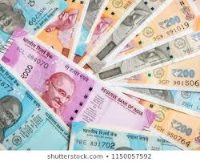
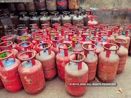
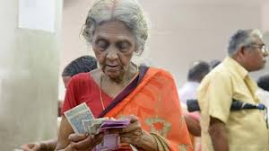

The Telangana State government will provide 12 kg
rice free for each person (against monthly
of 6 kg per person).
The rice will be supplied through ration
shops and necessary orders will be issued
by the State government shortly.
Chief Minister K Chandrashekhar Rao on Sunday
announced that the government would supply free rice
and Rs 1,500 cash to purchase es
sential commodities
for 87.59 lakh white ration card holders.

Over 8 crore Pradhan Mantri Ujjwala Yojana beneficiaries
will be entitled to a total of three 14.2-kg LPG cylinders
for free between April to
June, a move that will cost
the government an estimated Rs 13,000 crore.

Coronavirus: FM Sitharaman announces package
worth Rs 1,70,000 crore for poor, daily wagers
Coronavirus Relief Package: Government
Allows PF
Withdrawals As Emergency Measure
The Centre will give three months
pension in advance
to nearly three-crore widows,
senior citizens and
differently-abled in the
first week of April
amid the lockdown over
the novel coronavirus pandemic.
An amount of Rs 300 per
month is given to the widows
in the age group of 40-79 years
and Rs 500 to 80 years and above.
Besides this pension, Union Finance Minister
Nirmala Sitharaman had on
Thursday announced an ex gratia
amount of Rs
1,000 over the next three months
and it will be given in two instalments.
